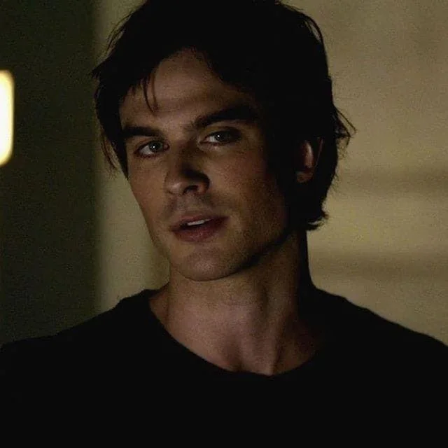

Welcome to Mystic Falls

Damon Salvatore is the "bad" Salvatore brother, known for his dark sense of humor, sarcasm, and initially villainous behavior. Despite his tough exterior and reputation, Damon has a good heart and is fiercely loyal to those he loves. He eventually becomes Elena's true love and husband.
Damon was born on August 18, 1839, in Mystic Falls. He was turned into a vampire in 1864 by Katherine Pierce, who compelled him to forget. Unlike his brother Stefan, Damon embraces his vampire nature and drinks human blood, making him stronger but more prone to losing his humanity.
Damon is known for his wit, charm, and dark humor. He often acts impulsively and can be manipulative, but he genuinely cares for those close to him. Over time, he evolves from a villain to a hero, showing significant character growth throughout the series.
Beneath his sarcastic and often cruel exterior, Damon possesses a deep capacity for love and loyalty. He uses his dark humor and cynicism as a defense mechanism to protect himself from emotional pain, having been hurt by Katherine's betrayal centuries ago. Despite his reputation for being selfish, Damon repeatedly proves he will sacrifice everything for those he loves, especially Elena and his brother Stefan.
Damon struggles with his humanity throughout the series, often shutting off his emotions when faced with difficult situations. However, his relationship with Elena helps him rediscover his humanity and become a better person. He is fiercely protective, sometimes to a fault, and his love for Elena transforms him from a self-serving vampire into someone capable of selfless acts. His catchphrase "Hello, Brother" reflects both his complex relationship with Stefan and his dry sense of humor.
Since The Vampire Diaries ended in 2017, Ian Somerhalder has continued his acting career and expanded into other ventures. He has appeared in various film and television projects, including the Netflix series "V-Wars" where he played a lead role.
Ian is also a passionate environmentalist and entrepreneur. He co-founded the Ian Somerhalder Foundation (ISF) with his wife, actress Nikki Reed, focusing on environmental protection and animal welfare. He has also launched his own bourbon brand, Brother's Bond Bourbon, which he created with his former co-star and on-screen brother, Paul Wesley (Stefan).
Ian remains active in the entertainment industry and continues to be involved in various projects, while also dedicating time to his family and environmental causes. His portrayal of Damon Salvatore remains one of his most iconic and beloved roles.
Ian Somerhalder - Ian's portrayal of Damon became one of the most popular characters on the show.